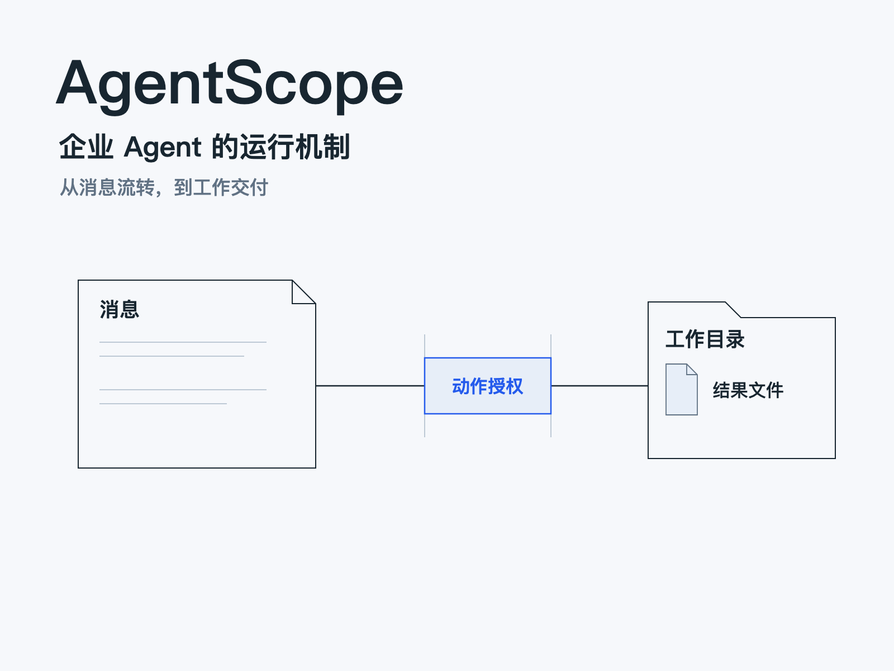
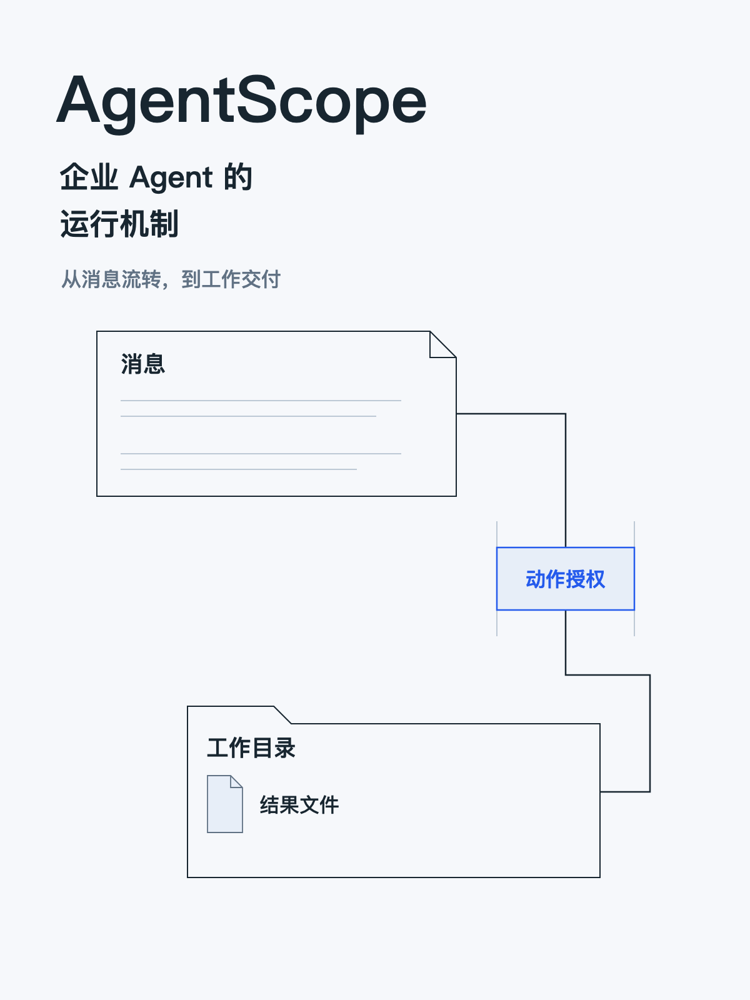

<!doctype html><html lang="zh-CN"><meta charset="utf-8"><meta name="viewport" content="width=device-width,initial-scale=1"><title>AgentScope · 运行机制</title><style>body{margin:0;background:#f6f8fb;color:#182630;font:18px/1.7 'PingFang SC',sans-serif}main{max-width:1200px;margin:auto;padding:40px 24px 80px}h1{font-size:42px;line-height:1.3}video{width:100%;background:#e7eef8}a{color:#255bec}nav{display:flex;gap:20px;flex-wrap:wrap;margin:20px 0}figure{margin:25px 0}figcaption{margin-top:8px;color:#617284}.covers{display:flex;gap:24px;align-items:flex-start}.covers img{max-height:340px;max-width:100%}</style><main><h1>AgentScope 企业 Agent 的运行机制</h1><nav><a href="film/index.html">完整舞台</a><a href="out/agentscope-enterprise-cut3.mp4">62:19 完整成片</a><a href="../reading-v2.html">详尽阅读稿</a><a href="design/README.md">设计与修订</a></nav><figure><video controls preload="metadata" poster="evidence/overview/workspace.png" src="proof/out/agentscope-visual-proof.mp4"></video><figcaption>11:02 · 消息行程、权限闸门、工作区与恢复</figcaption></figure><p><a href="proof/film/index.html">逐场观看核心样段</a> · <a href="out/agentscope-enterprise-cut3.mp4">下载完整成片</a></p><div class="covers"><a href="covers/agentscope-4x3.svg"></a><a href="covers/agentscope-3x4.svg"></a></div></main></html>